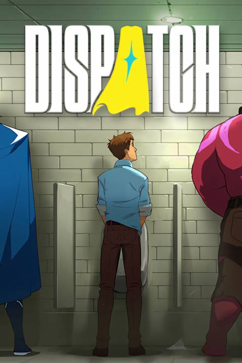

Dispatch
Detalles
 |
|
| Tiempo de juego | No Jugado |
| Última actividad | Nunca |
| Añadido | 19/11/2025 13:02:21 |
| Modificado | 19/11/2025 20:19:40 |
| Estado de finalización | Not Played |
| Librería | Playnite |
| Fuente | 2TB DATOS |
| Plataforma | PC (Windows) |
| Fecha de lanzamiento | 22/10/2025 |
| Puntuación de la Comunidad | 96 |
| Puntuación de la Crítica | 89 |
| Puntuación de usuario | |
| Género | Acción Aventura Casual Estrategia Indie |
| Desarrollador | AdHoc Studio |
| Editor | AdHoc Studio |
| Característica | Alternativas De Color Cloud Saves Compat. Total Con Mando Controles De Volumen Personalizados Cromos De Dificultad Ajustable Jugable Sin Eventos Rápidos Logros De Opción Solo Ratón Opciones De Subtítulos Préstamo Familiar Tamaño Del Texto Ajustable Un Jugador |
| Enlaces | Punto de encuentro Discusiones Guías Noticias Página de la tienda PCGamingWiki Logros |
| Tag | Acción Ambientales Apuntar y clic Aventura Banda sonora Buena trama Cinematográficos Comedia Cómics Contenido sexual Desnudos Divertidos Elige tu propia aventura Episódico Estrategia Indie Las elecciones importan Romance Superhéroes Un jugador |
Descripción
De los guionistas y directores de Tales from the Borderlands y The Wolf Among Us, Dispatch es una comedia de oficina sobre superhéroes ambientada en la Los Ángeles moderna.
Juegas como Robert Robertson, también conocido como Mecha Man, cuyo traje mecánico es destruido en una batalla contra su némesis, lo que lo obliga a aceptar un trabajo en un centro de despacho de superhéroes: no como héroe, sino como despachador. A cargo de rehabilitar a un grupo de ex-supervillanos, deberás gestionar tu equipo mientras navegas por las relaciones en la oficina y reconstruyes tu traje para tener una oportunidad de venganza.
En Dispatch, cada decisión que tomes influye en la narrativa que se desarrolla. Desde las bromas en la sala de descanso hasta las situaciones de vida o muerte en el campo, tus elecciones afectan tus relaciones con los héroes, sus lealtades y el camino que toma tu propia historia.
Utiliza el mapa estratégico para revisar las emergencias en curso y enviar a los héroes adecuados (o no tan adecuados) para encargarse de ellas. Equilibra los riesgos y las recompensas mientras tomas decisiones tácticas, sabiendo que cada elección puede tener consecuencias duraderas para tu equipo y la ciudad.
Gestionar a los héroes a veces va más allá de sus poderes. Cada héroe tiene peculiaridades, defectos y problemas que deberás gestionar para mantener al equipo unido. Mejora sus habilidades y desbloquea poderes para aumentar su efectividad en el campo.
Combinando narrativa, estrategia y humor, Dispatch explora lo que significa ser un héroe, ya sea que lleves una capa o estés detrás de un escritorio.

Con un elenco estelar de todos los rincones del entretenimiento.
Aaron Paul (Breaking Bad, Westworld, Black Mirror)
Laura Bailey (The Legend of Vox Machina, The Last of Us II, Marvel's Spider-Man)
Erin Yvette (Hades II, The Wolf Among Us, Armored Core VI: Fires of Rubicon)
MoistCr1TiKaL (Charles White)
Jacksepticeye (Sonic Prime, River City Girls 1 & 2, Bendy and the Ink Machine)
Travis Willingham (The Legend of Vox Machina, Critical Role, Lego Avengers)
Alanah Pearce (V/H/S Beyond, Cyberpunk 2077, Gears 5)
Lance Cantstopolis (Karate, Dancing, Actor)
Joel Haver (Filmmaker, Actor, YouTuber)
THOT SQUAD (músico: Pound Cake, Hoes Depressed)
Yung Gravy (músico: Betty (Get Money), oops!)
Matthew Mercer (Critical Role, Overwatch, Resident Evil 6)
y Jeffrey Wright (American Fiction, The Batman, Casino Royale)